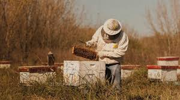

Granja Alfonso Roth
Soy Alfonso Roth, apicultor desde 1932 y fundador de Granja Alfonso una compañía especializada en la producción y exportación de extracto de propóleo de alta calidad. El propóleo es una sustancia natural producida por las abejas, conocida por sus propiedades antibacterianas, antivirales y antiinflamatorias, entre otros beneficios para la salud. En nuestra fábrica, utilizamos métodos de extracción cuidadosos y procesos de purificación avanzados para asegurarnos de que nuestro extracto de propóleo sea de la mejor calidad posible. Nuestro objetivo es ofrecer un producto 100% natural y seguro para la salud de nuestros clientes. Además, nos comprometemos a trabajar en estrecha colaboración con los apicultores locales y las comunidades donde operamos, fomentando prácticas sostenibles y respetuosas con el medio ambiente. Gracias a nuestra dedicación a la calidad y nuestra ética de trabajo responsable, hemos sido capaces de establecernos como un proveedor de confianza en el mercado global de extracto de propóleo. Estamos orgullosos de compartir los beneficios de esta sustancia natural con el mundo entero y esperamos seguir haciéndolo por muchos años más.
IMPORTANCIA NUTRICIONAL

La miel es el endulzante natural más sano y beneficioso para la salud. Producto 100% natural,
de origen esencialmente vegetal, fuerte en azúcares simples y perfectamente asimilables
(fructosa, glucosa y sacarosa), es fuente de energía por excelencia.
La miel es un excelente alimento, de gran valor nutritivo. Contiene vitamina B, y sustancias
minerales como los fosfatos de calcio, de hierro, de magnesio, potasio de sodio, azufre, cloro,
enormes cantidades de ácido fosfórico, manganeso, cobre y enzimas en buenas proporciones.
Consumida tal cual o asociada a otros alimentos, es un modo de lucha eficaz contra el
cansancio y el estrés de la vida actual. Su fácil utilización y sus propiedades naturales hacen de
ella un alimento especialmente recomendado para las personas preocupadas por su salud y
bienestar. La miel es definida por el código alimentario como una sustancia dulce, no fermentada,
producida por las abejas del néctar de las flores, o de las secreciones sobre o de las plantas
vivas que ellas recolectan, transforman y combinan con sustancias específicas y que finalmente
almacenan y maduran en panales. Su composición es variada. Está compuesta por agua, fructosa y glucosa, además de otras
sustancias en muy baja proporción como son ácidos, minerales, aminoácidos, proteínas,
enzimas, aromas, etc.
La miel de color oscuro es superior en valor nutricional a la de color claro, pues cuanto más
oscura es la miel, mayor es su porcentaje de sales minerales, y por ende, mayor s u valor
nutritivo.
Adicionalmente, el polen se emplea como suplemento dietético. Incluso algunos nutricionistas
consideran que el polen de abeja es una fuente casi perfecta de proteína.
Esta sustancia posee excelentes propiedades, tanto para las abejas como para el consumo
humano. Su uso diario y dosificado brinda una sensación de fuerza y resistencia al cansancio.
El polen contiene agua, aminoácidos, proteínas, lípidos, carbohidratos, minerales, vitaminas,
enzimas y otros micronutrientes.